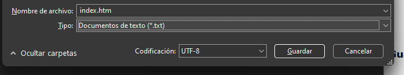
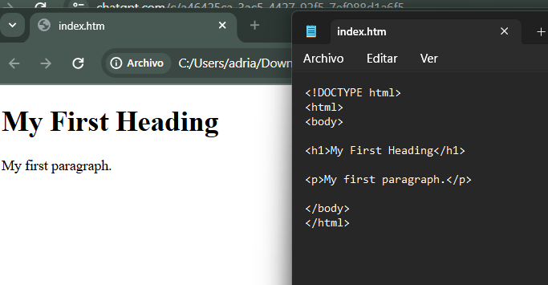

EDITORES HTML
Un editor de texto simple es todo lo que necesitas para aprender HTML.
Aprenda HTML con el Bloc de notas o TextEdit
Se pueden crear y modificar páginas web utilizando editores HTML profesionales.
Sin embargo, para aprender HTML recomendamos un editor de texto simple como el Bloc de notas (PC) o TextEdit(Mac).
Creemos que utilizar un editor de texto simple es una buena manera de aprender HTML.
Siga los pasos a continuación para crear su primera página web con el Bloc de notas o TextEdit.
Paso 1: Abra el Bloc de notas (PC)
Windows 8 o posterior:
Abra la pantalla de Inicio (el símbolo de la ventana en la parte inferior izquierda de la pantalla). Escriba Bloc de notas .
Windows 7 o anterior:
Abra Inicio > Programas > Accesorios > Bloc de notas
Paso 1: Abra TextEdit (Mac)
Abra Finder > Aplicaciones > TextEdit
También puedes cambiar algunas preferencias para que la aplicación guarde los archivos correctamente. En Preferencias > Formato > elige "Texto sin formato".
Luego, en "Abrir y guardar", marca la casilla que dice "Mostrar archivos HTML como código HTML en lugar de texto formateado".
Luego abre un nuevo documento para colocar el código.
Paso 2: Escribe algo de HTML
Escriba o copie el siguiente código HTML en el Bloc de notas:

Paso 3: Guardar la página HTML
Guarde el archivo en su computadora. Seleccione Archivo > Guardar como en el menú del Bloc de notas.
Nombra el archivo "index.htm" y establece la codificación en UTF-8 (que es la codificación preferida para archivos HTML).
Consejo:
Puedes utilizar la extensión de archivo .htm o .html. No hay diferencia, tú decides.
Paso 4: Ver la página HTML en su navegador
Abra el archivo HTML guardado en su navegador favorito (haga doble clic en el archivo o haga clic derecho y elija "Abrir con").
El resultado se parecerá más o menos a esto:
Editor en línea de W3Schools: "Pruébelo usted mismo"
Con nuestro editor en línea gratuito, puede editar el código HTML y ver el resultado en su navegador.
Es la herramienta perfecta cuando se desea probar código rápidamente. También tiene codificación por colores y la capacidad de guardar y compartir código con otros: